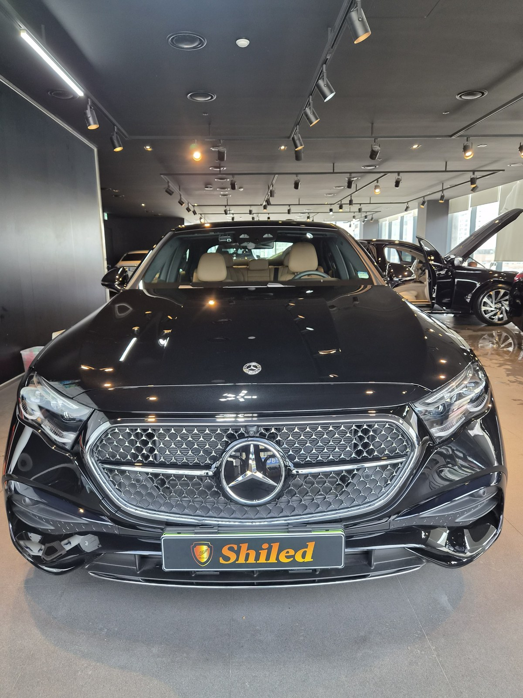
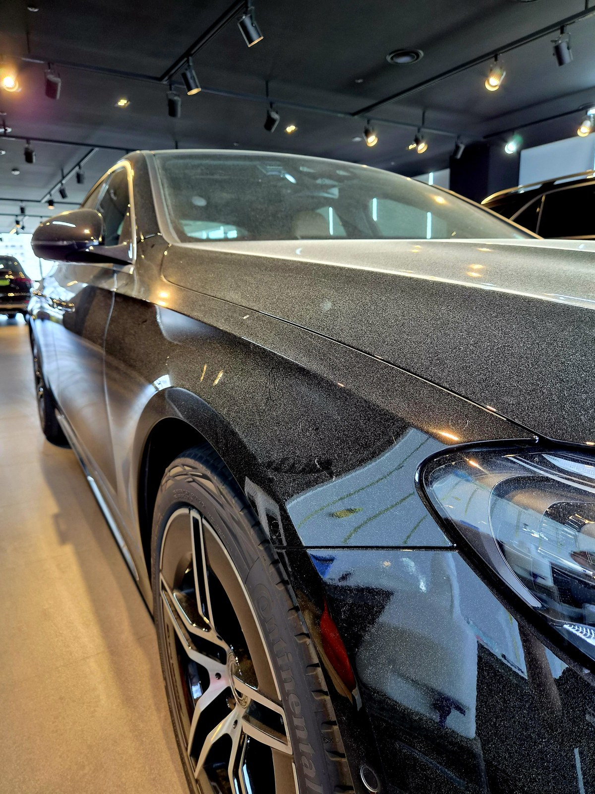
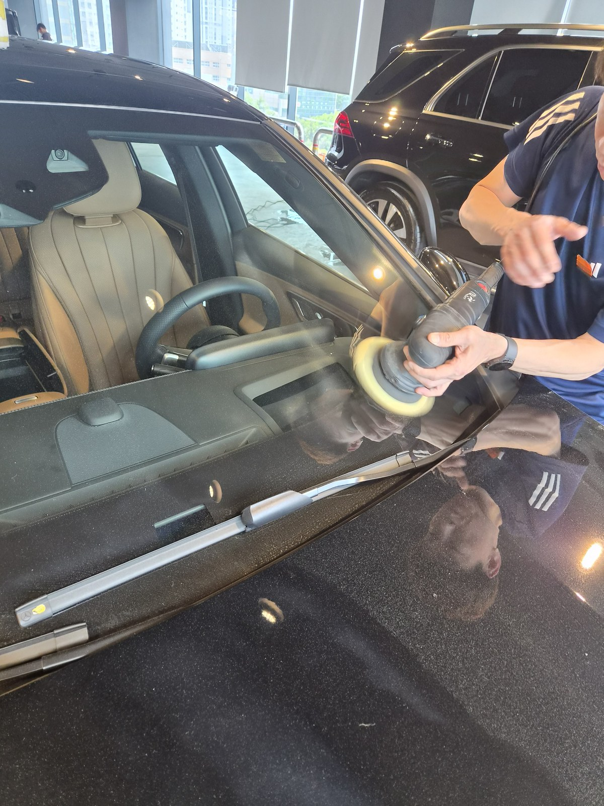
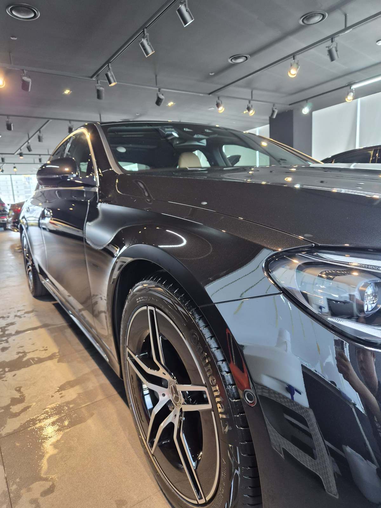
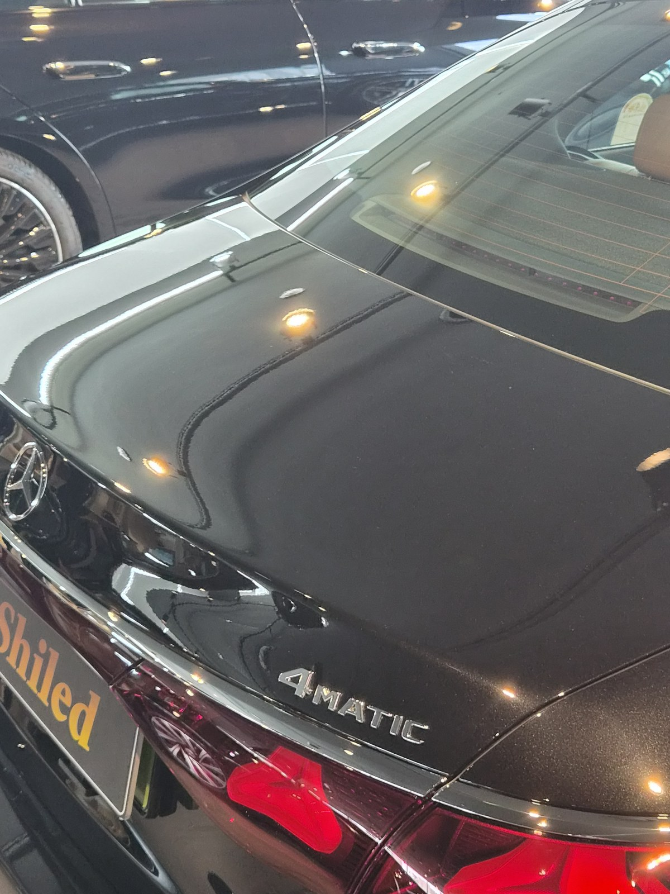

부산 쉴드광택에 들어온 벤츠 E300 4MATIC입니다. 검정 메탈릭 바디입니다.
이 차는 코팅을 올리기 전, 광택으로 표면부터 평탄하게 정리했습니다.

검정 차는 왜 잔기스가 더 잘 보이나
검정은 빛을 흡수하는 색입니다. 그래서 표면의 미세한 흠집이 반사광에서 그대로 떠오릅니다.
밝은 색이면 묻혀 보일 잔기스가, 검정에서는 거미줄처럼 다 드러납니다. 펜더와 도어를 조명 아래에 두니 세차하면서 쌓인 전형적인 미세 스월이 보였습니다.

광택 전. 빛을 받으면 잔기스가 그물처럼 떠오릅니다
광택은 무조건 세게 깎는 게 정답이 아닙니다
잔기스를 없앤다고 클리어코트(도장면 맨 위 보호막)를 마구 깎으면, 정작 도장 수명을 깎는 일이 됩니다.
그래서 잔기스 깊이를 보고 필요한 만큼만 컴파운드와 패드를 맞춰 깎습니다. 16년간 직접 시공하며 잡아온 감각입니다.
기술자의 팁
검정은 깎은 만큼 티가 나는 색입니다. 표면을 평탄하게 정리해야 빛이 한 점으로 또렷하게 맺힙니다. 반대로 대충 깎으면 그 흔적(버핑마크)이 검정에선 더 잘 보입니다.
광택 전, 전처리가 9할입니다
좋은 결과도 더러운 바탕 위에선 나오지 않습니다.
디테일링 세차로 표면 오염을 걷어내고, 철분 제거제로 박힌 쇳가루를 녹여냅니다. 마스킹으로 고무·플라스틱을 보호하고, 탈지까지 끝내야 비로소 광택을 올릴 면이 됩니다. 눈에 안 보이는 오염까지 잡는 게 퀄리티의 시작입니다.

잔기스 깊이에 맞춰 패드와 컴파운드를 바꿔가며 면을 잡습니다
마감 후
보닛과 트렁크 위로 조명이 한 칸 한 칸 또렷하게 맺힙니다.
왜곡 없이 떨어지는 반사가, 표면을 평탄하게 잡았다는 증거입니다. 검정 특유의 깊은 블랙이 살아났습니다.


광택 후, 이렇게 관리하세요
광택으로 정리한 면은 관리로 수명이 갈립니다.
자동세차(기계세차)는 브러시가 잔기스를 다시 만드니 피하시는 게 좋습니다. 검정은 특히 마른 수건으로 문지르면 흠집이 나기 쉬우니, 물기를 충분히 적신 상태에서 닦아주십시오. 표면 보호가 필요하시면 유리막코팅으로 한 겹 더 잡아드립니다.
자주 묻는 질문
Q. 검정 차는 왜 잔기스가 더 잘 보이나요?
A. 검정은 빛을 흡수하는 색이라 미세한 흠집이 반사광에서 그대로 떠오릅니다. 밝은 색은 잔기스가 묻혀 보이지만 검정은 작은 스월까지 다 드러납니다. 그래서 검정일수록 표면 정리가 결과를 좌우합니다.
Q. 광택 전에 왜 전처리부터 하나요?
A. 도장면에 먼지·철분·유분이 남은 채로 패드를 돌리면 그 오염을 끌고 다니며 새 흠집을 만듭니다. 디테일링 세차·철분 제거·마스킹·탈지를 끝낸 뒤에야 깨끗한 면 위에서 광택을 올릴 수 있습니다.
Q. 광택을 하면 도장이 얇아지지 않나요?
A. 필요한 만큼만 깎습니다. 클리어코트 두께를 보고 잔기스 깊이에 맞춰 컴파운드와 패드를 조절합니다. 무조건 세게 깎는 게 정답은 아닙니다.
Q. 광택 후 관리는 어떻게 하나요?
A. 자동세차는 잔기스를 다시 만드니 피하시고 손세차 위주로 관리하십시오. 검정은 마른 수건으로 문지르지 말고 물기를 충분히 적신 상태에서 닦아주시면 좋습니다.
Q. 쉴드광택 위치와 예약은 어떻게 하나요?
A. 부산 남구 유엔로220 1F 쉴드광택입니다. 예약·상담은 010-3384-1850, 대표 최한중이 직접 상담하고 책임 시공합니다.
검정은 시작점이 다르면 결과가 확연히 다릅니다.
제품을 직접 만드는 사람이 직접 시공합니다.
부산에서 광택·유리막코팅을 고민 중이시면 편하게 연락 주십시오.
어떤 차를 타냐보다 어떻게 타냐가 중요합니다~!
📞 010-3384-1850 견적 문의쉴드광택 · 부산 남구 유엔로220 1F · 대표 최한중